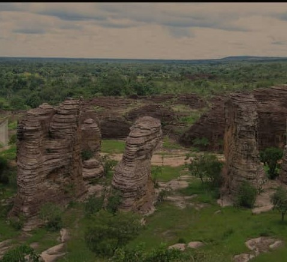
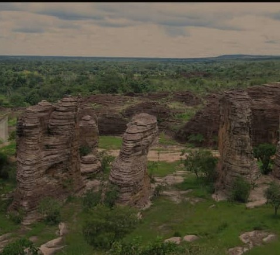

Les dômes de Fabédougou sont de véritables édifices de plusieurs mètres de haut construits par la nature. Situés à une quinzaine de kilomètres de la ville de Banfora, les dômes de Fabédougou se laissent grimper avec plaisir. Le dôme est défini par le … Le dôme est défini par le dictionnaire comme un sommet semi-sphérique de certains édifices, en forme de coupole. Au sommet de ces dômes de Fabédougou, s’offre une vue panoramique des champs de canne à sucre et l’abondante végétation présente dans cette partie du Burkina Faso. Pour aller sur les dômes il est nécessaire de porter des paires de chaussures adaptées au terrain, être en tenue de sport de préférence afin de faciliter les mouvements de grimpée des dômes. En plus, l’accès au site est conditionné par le versement auprès de l’agent de l’Office national du tourisme burkinabè (ONTB), la somme de cinq cents francs (500) pour les nationaux et mille francs (1000F) CFA pour les étrangers.
 
